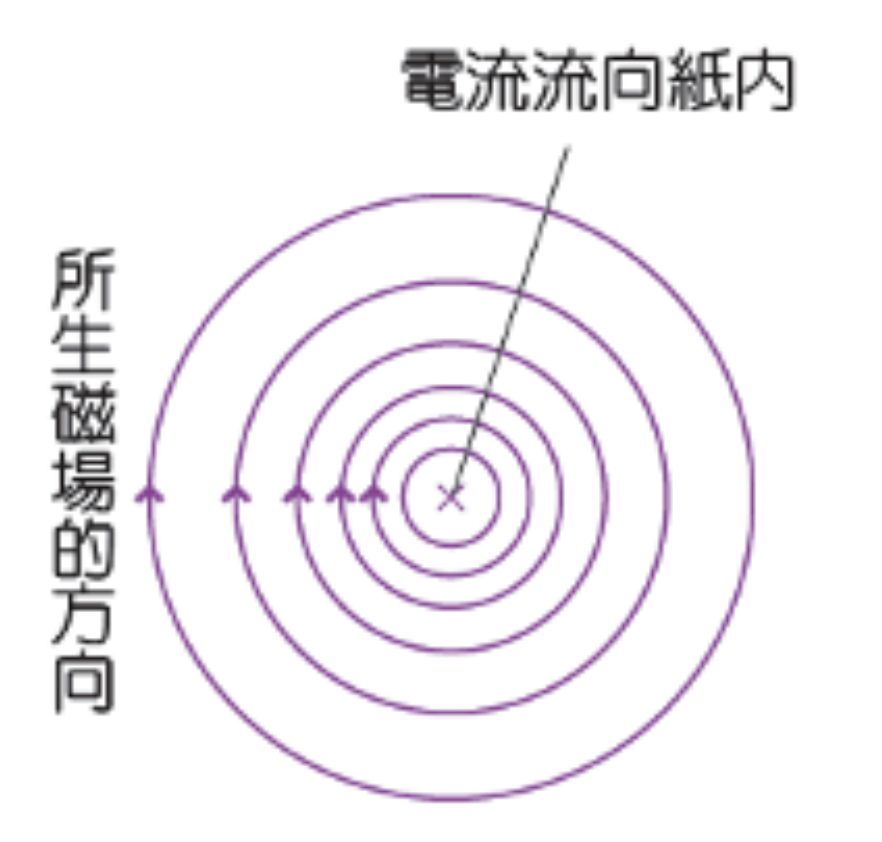

電流周圍藏著磁場
1820 年，丹麥科學家奧斯特在實驗時意外發現：當導線通電時，旁邊的指南針竟然發生了偏轉！
- 長直導線通電後，周圍會產生以導線為圓心的同心圓磁力線。
- 磁場的方向與電流方向互相垂直。
- 距離導線越近，磁場就越強（呈內密外疏的分佈）。
安培右手定則
要判斷電流與磁場方向的關係，我們使用安培右手定則：
- 伸直右手，讓大拇指指向電流方向。
- 其餘四指彎曲的方向，就是磁場（磁力線）的環繞方向。
- 點擊下方按鈕，觀察右側的「手」與白色磁力線箭頭如何跟著反轉！
× 與 • 是立體方向符號
符號本身只表示方向：旁邊標 I 時代表電流；標 B 時代表磁場。把方向想成一支正在飛行的箭，就能判斷它指入或指出紙面。
× 指入紙面
×
像箭尾的羽毛
I×：電流流入
B×：磁場指入
↻
若 × 代表 I
周圍 B 為順時針
• 指出紙面
•
像迎面而來的箭尖
I•：電流流出
B•：磁場指出
↺
若 • 代表 I
周圍 B 為逆時針
先看標示：I 是電流、B 是磁場；再看符號：× 向內、• 向外。

中央 ×：電流流入紙面；依右手定則，周圍磁場沿順時針方向環繞。